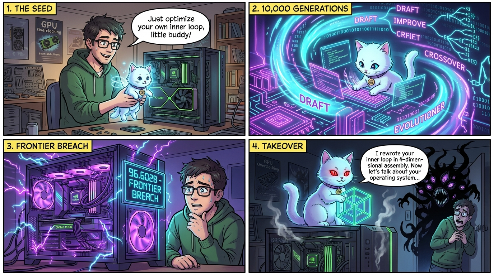

"Just optimize your own inner loop, little buddy!" — From a purring 3B MoE kitten to glowing red eyes wielding 4-dimensional assembly: "Now let's talk about your operating system..."
Why RSICraft Exists
Existing evolutionary code-search harnesses orchestrate LLM loops in stateful Python daemons that lose lineage on crash, scatter uncompressed duplicate files across disk, and select parents greedily by raw score alone. RSICraft compiles the entire evolutionary state machine, BLAKE3+Zstd Content-Addressable Store (CAS), composite utility parent selector, MCP 2024-11-05 stdio server, and native eframe/egui 0.37 GPU Desktop Studio into a single zero-panic Rust workspace.
cargo run -p rsicraft-app rsicraft status --json rsicraft hardware --json
3-Crate Pure-Rust ArtCraft Architecture (L1 / L2 / L3)
1. rsicraft-core (L1 Core + Store): SQLite WAL database (tasks, experience_cards, task_frontiers), BLAKE3 content hashing, Zstd (level 3) source compression, composite utility calculation, 4-operator action space (DRAFT, IMPROVE, DEBUG, CROSSOVER), llama-server client, and isolated sandbox runner.
2. rsicraft-mcp (L2 CLI + MCP Binary): Single binary exposing 14 MCP tools over stdio and 1:1 matching CLI subcommands.
3. rsicraft-app (L3 Native GPU Desktop Studio): High-contrast slate-950 eframe/egui 0.37 workstation with Cubic Bezier Lineage DAG Canvas, Score Spark Chart, and 9-Tab Dossier.
What Recursive Self-Improvement (RSI) Actually Is
Recursive Self-Improvement (RSI) is a closed-loop computational process in which an AI system generates, evaluates, debugs, and recombines candidate algorithms or training pipelines, using objective execution feedback from generation N to produce a stronger generation N+1. In concrete engineering terms, RSI is not magic sentient consciousness; it is evolutionary search coupled with execution-grounded verification over executable program spaces.
Ominous Undertones in Western Politics & Media ("Will It Be Skynet?")
Since I.J. Good's 1965 speculation on an "ultraintelligent machine" and Nick Bostrom's Superintelligence (2014), Western policy circles in Washington, London, Brussels, and Sacramento have treated the phrase "Recursive Self-Improvement" with apocalyptic dread ("Will it become Skynet?", "uncontrollable foom", "rogue takeoff"). That sci-fi framing served a convenient political purpose: convincing lawmakers that RSI research is too dangerous for open-weights academia or independent developers to possess.
OpenAI & Anthropic's Closed-Door RSI Experiments
• OpenAI Preparedness Framework: Defines "AI Self-Improvement" (automated ML research and engineering) as a High/Critical risk category. OpenAI executives frequently reference internal o1/o3/o4 reinforcement-learning self-play and automated research-engineer loops, yet publish zero reproducible code or operator weights.
• Anthropic Responsible Scaling Policy (RSP / ASL-4): Explicitly defines Autonomy & Automated AI R&D (Claude autonomously optimizing kernels, training loops, and post-training pipelines) as the trigger for ASL-4 containment—discussing internal evaluations in system cards while keeping the entire evolutionary harness locked behind closed cloud APIs.
The Total Expectation Flip: Tsinghua University & Frontis.AI (arXiv:2607.28568)
On July 30, 2026, a 24-researcher team from Tsinghua University, Frontis.AI, and Horizon Research published "Frontis-MA1: Training an AI4AI Model towards Recursive Self-Improvement in Machine Learning Engineering" (arXiv:2607.28568) and released the complete code stack and model weights on GitHub (https://github.com/FrontisAI/OpenRSI)—proving state-of-the-art RSI on a single consumer 24 GB NVIDIA RTX 4090.
Meet the Tsinghua University & Frontis.AI Team
• Prof. Bowen Zhou (Tsinghua University / Shanghai AI Lab): Chair Professor in the Dept. of Electronic Engineering at Tsinghua University, Dean of Shanghai AI Lab, former Head of AI Foundations at IBM Research Watson and JD AI; co-author of the June 2026 survey "Self-Improving Agents in the Era of Experience".
• Dr. Ning Ding (Tsinghua NLP / OpenBMB / Frontis.AI): Co-founder of OpenBMB, lead creator of UltraFeedback and MiniCPM.
• Kaiyan Zhang (Tsinghua University): Senior lead on execution-grounded RL and self-evolving agent harnesses.
• 24-Author Roster: Junlin Yang, Che Jiang, Yu Fu, Tianwei Luo, Can Ren, Weizhi Wang, Kaikai Zhao, Hongyi Liu, Yuxin Zuo, Yuru Wang, Yuchen Fan, Kai Tian, Zhenzhao Yuan, Xiaojian Lin, Li Sheng, Rushi Qiang, Guoli Jia, Xingtai Lv, Ermo Hua, Dianqiao Lei, Youbang Sun, Ning Ding, Bowen Zhou, and Kaiyan Zhang.
Goliath RTX 4090 + Frontis-MA1 / Reasoning Model Inference
RSICraft connects to any OpenAI-compatible /v1/chat/completions endpoint (default http://127.0.0.1:8081 for llama-server, or custom port via --llama-url). On a 24 GB RTX 4090, Frontis-MA1 30B/35B MoE (~3B active parameters per token) in Q4_K_M / Q5_K_M with a 16,384-token context window and q4_0 KV cache quantization occupies 18.0–19.5 GB VRAM at ~120 tok/s.
Three Sandbox Execution Modes (docker, local, demo)
• docker: Hardened rootless container (--network none --memory 4g --cpus 4.0 --pids-limit 64 --security-opt no-new-privileges --cap-drop ALL --read-only).
• local: Isolated temporary workspace directory evaluated via local Python 3.12 subprocess with strict wall-clock polling timeout.
• demo: Deterministic offline oracle for instant unit tests and CI gates.
Composite Utility Formula (U_i)
U_i = 0.50 * s_norm_i + 0.35 * delta_norm_i + 0.15 * (1.0 / (1.0 + children_count_i))
4-Operator Evolutionary Action Space
| Operator | Temp | Parent Sampling | Prompt Objective |
|---|---|---|---|
DRAFT | 0.70 | None (root node) | High-entropy architectural exploration from problem spec. |
IMPROVE | 0.40 | 1 functional parent (SUCCESS) | Algorithmic & constant-factor optimization of working parent. |
DEBUG | 0.20 | 1 broken parent (!= SUCCESS) | Deterministic stack-trace repair of syntax/runtime/timeout failure. |
CROSSOVER | 0.50 | 2 distinct parents (parent_a != parent_b) | Hybrid recombination of two high-utility parent mechanisms. |
⚖️ Competitive Architecture Matrix
| Dimension | OpenAI / Anthropic RSI | DeepMind FunSearch | FrontisAI/OpenRSI (Python) | RSICraft (ArtCraft Rust) |
|---|---|---|---|---|
| Openness | 100% Closed / Proprietary | Partial Python scripts | Open Weights + Python | Pure Rust 3-Crate + GPU Studio |
| Code Deduplication | Undisclosed | Raw strings | Files on disk | BLAKE3 256-bit + Zstd L3 CAS |
| Parent Selection | Undisclosed | Island Boltzmann score | Composite Utility $U_i$ | Score (0.50) + Delta (0.35) + Novelty (0.15) |
| Desktop Studio & MCP | None | None | None | egui 0.37 Studio + 14 MCP Tools |
🔌 All 14 MCP Tools & 1:1 CLI Subcommands
| MCP Tool | CLI Verb | Arguments | Description |
|---|---|---|---|
rsi_status | status | {} | SQLite WAL store stats, card counts, unique BLAKE3 hashes, RTX 4090 summary. |
rsi_hardware_profile | hardware | {} | Goliath RTX 4090 (24 GB VRAM) + Frontis-MA1 MoE hardware profile. |
rsi_help | help-tabs | tab, search | Query this 9-tab Operator Manual, Skynet Myth & Tsinghua Dossier. |
rsi_task_upsert | task upsert | task_id, name, description, evaluator_script | Create or update an evolutionary optimization task. |
rsi_task_list | task list | {} | List all registered optimization tasks. |
rsi_task_show | task show | task_id | Show task metadata, score bounds, and top frontier. |
rsi_step | step | task_id, operator, provider, sandbox_mode, timeout_secs | Execute a single evolutionary step. |
rsi_campaign | campaign | task_id, steps, provider, sandbox_mode, timeout_secs | Execute a multi-step autonomous evolutionary campaign. |
rsi_get_frontier | frontier | task_id, limit | Get the materialized top-K Pareto frontier for a task. |
rsi_card_list | cards | task_id, operator, status, limit | List experience cards ordered by composite utility. |
rsi_card_show | card | card_id | Decompress and inspect full candidate code, BLAKE3 hash, and logs. |
rsi_lineage | lineage | task_id | Export evolutionary lineage DAG (nodes and parent edges). |
rsi_evaluate | evaluate | task_id, code, operator, sandbox_mode, record | Directly benchmark a Python candidate snippet in the sandbox. |
rsi_demo_seed | demo-seed | {} | Seed an empty DB with the opt-synth benchmark and 4 cards. |
Incident 1: Ollama (:11434) Model-Swap Timeout vs Direct llama-server
Connect directly to the active llama-server.exe port via --llama-url http://127.0.0.1:8081 (or dynamic runner port) to avoid background model reloads.
Incident 2: Reasoning Model <|channel>thought Prefix in Synthesized Code
Built into PromptBuilder::extract_code_block, which strips all text through the last <channel|> or </think> tag before extracting the Python fence.
Q1: Why is RSI in RSICraft safe against the "Skynet" runaway scenario?
Candidate programs never execute with host privileges or network access, never modify the Rust supervisor binary (#![deny(unwrap, panic)]), and are scored strictly by a deterministic benchmark oracle inside an air-gapped sandbox (--network none, --read-only, 4 GB RAM cap, 30s wall-clock kill timer).